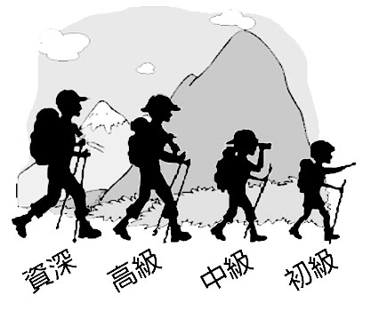

路線難度初級
前往太平山頂，可在中環坐百年歷史的纜車登山，沿途眺望車窗外景色。太平山山頂海拔373公尺，甫出山頂纜車站，就是凌霄閣，內有餐廳及賞景的摩天台。離開凌霄閣，右邊是盧吉道，左是夏力道，兩道組成山頂環迴步行徑，全程3.5公里。沿盧吉道走，途經百年建築的山頂纜車公司辦事處，屬二級歷史建築，而山路旁還置有幾張百年長石凳。繼續前行是盧吉道觀景台，可鳥瞰維港兩岸繁榮的城市景色。
沿夏力道走，約1公里，較盧吉道短，但也有小瀑布觀賞，隨後徒步約5-10分鐘可返回凌霄閣。沿「柯士甸山道」路牌指示，徒步約20分鐘，途經途柯士甸山遊樂場、法定古迹的舊總督山頂別墅守衛室，便抵達山頂公園。山頂公園最標誌的建築是園內幾座維多利亞式涼亭，以及置中花圃中的歐式涼庭，瀰漫濃厚的殖民色彩，亦是打卡留念的景點。
沿夏力道走，約1公里，較盧吉道短，但也有小瀑布觀賞，隨後徒步約5-10分鐘可返回凌霄閣。沿「柯士甸山道」路牌指示，徒步約20分鐘，途經途柯士甸山遊樂場、法定古迹的舊總督山頂別墅守衛室，便抵達山頂公園。山頂公園最標誌的建築是園內幾座維多利亞式涼亭，以及置中花圃中的歐式涼庭，瀰漫濃厚的殖民色彩，亦是打卡留念的景點。
山頂纜車
坐山頂纜車可遠眺車窗外美景
凌霄閣是鳥瞰維港兩岸景色的理想地
凌霄閣摩天台

歐式涼庭是山頂公園的標誌性建築
山頂公園
美食優惠：阿甘蝦餐廳
獲取美食優惠方法：用手機拍攝一張「阿甘蝦餐廳」的舖面照片，上載到你的Facebook及hashtag #周末好去處，向餐廳職員出示你的帖文，即場可獲8折餐飲券乙張。須消費滿HK$300及點餐時出示餐飲券。地址：凌霄閣304-305號舖。
在港鐵中環站J出口出，前往纜車站坐纜車至山頂站下車。
或選乘以下公共交通工具前往山頂：
(A) 新巴第X15號線（中環（中環渡輪6號碼頭）– 山頂；
(B) 新巴第15號線（中環（中環渡輪碼頭）/ 交易廣場 – 山頂；
(C) 港島專線小巴第1 號線（中環（香港站公共運輸交匯處）– 山頂）
或選乘以下公共交通工具前往山頂：
(A) 新巴第X15號線（中環（中環渡輪6號碼頭）– 山頂；
(B) 新巴第15號線（中環（中環渡輪碼頭）/ 交易廣場 – 山頂；
(C) 港島專線小巴第1 號線（中環（香港站公共運輸交匯處）– 山頂）